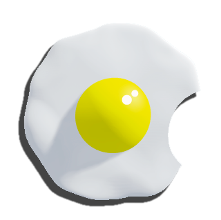

<!-- Toolbar -->
<nav class="navbar navbar-expand-lg bg-body-secondary bg-primary navbar-dark">
  <div class="container-fluid">
    <a class="navbar-brand" href="#">
      
      MALAGA ANGULAR</a>
    <button class="navbar-toggler" type="button" data-bs-toggle="collapse" data-bs-target="#navbarSupportedContent" aria-controls="navbarSupportedContent" aria-expanded="false" aria-label="Toggle navigation">
      <span class="navbar-toggler-icon"></span>
    </button>
    <div class="collapse navbar-collapse" id="navbarSupportedContent">
      <ul class="navbar-nav me-auto mb-2 mb-lg-0">
        <li class="nav-item">
          <a class="nav-link" routerLink="/adivina">ADIVINA</a>
        </li>
        <li class="nav-item">
          <a class="nav-link" routerLink="/dni">DNI</a>
        </li>
        <li class="nav-item">
          <a class="nav-link" routerLink="/perros">PERROS</a>
        </li>
        <li class="nav-item">
          <a class="nav-link" routerLink="/basico">BASICO</a>
        </li>
        <li class="nav-item">
          <a class="nav-link" routerLink="/imc">IMC</a>
        </li>
        <li class="nav-item">
          <a class="nav-link" routerLink="/chuck">CHUCK</a>
        </li>
        <li class="nav-item">
          <a class="nav-link" routerLink="/restaurante">RESTAUrante</a>
        </li>
      </ul>     
    </div>
  </div>
</nav>

<!-- este componente es la refencia donde se anclan
los otros componenetes paginas a las que voy navegando -->
<div >
  <router-outlet></router-outlet>
</div>

